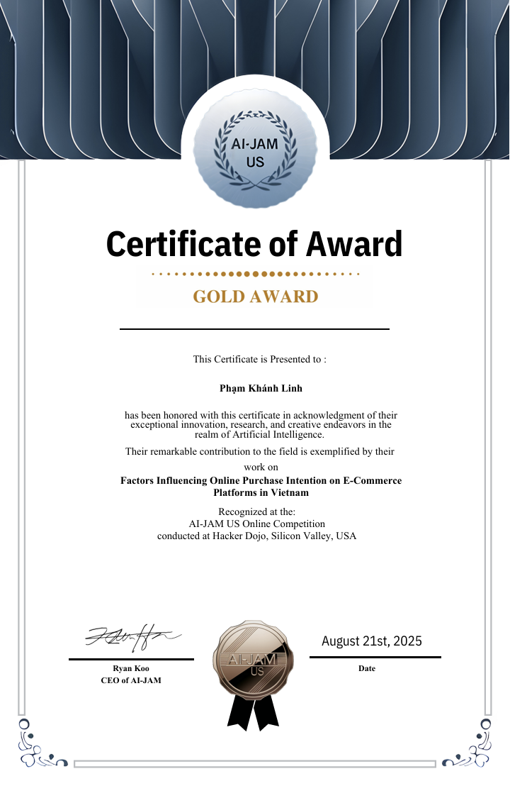
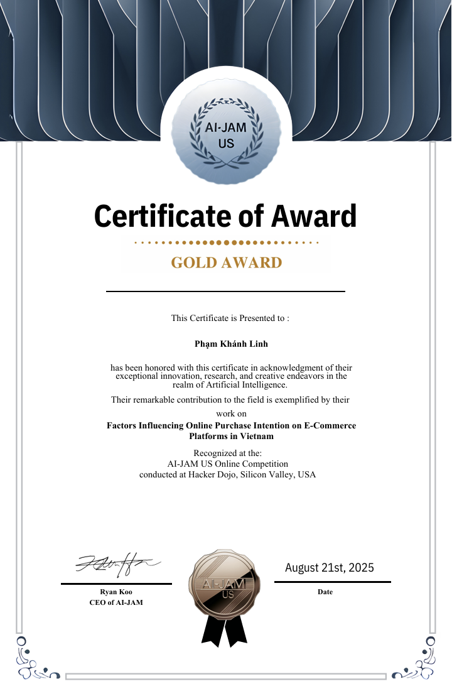
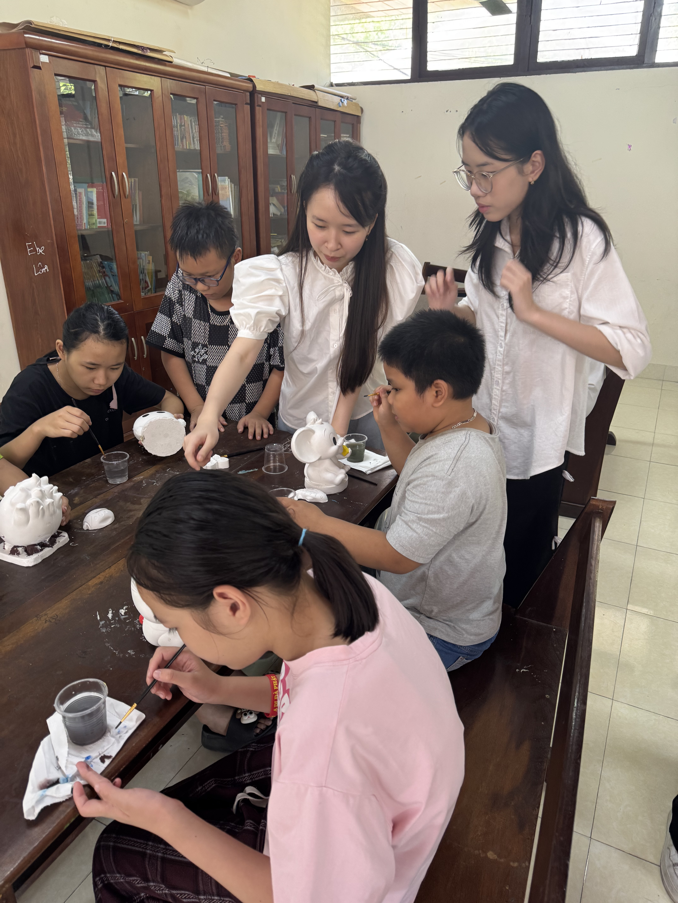
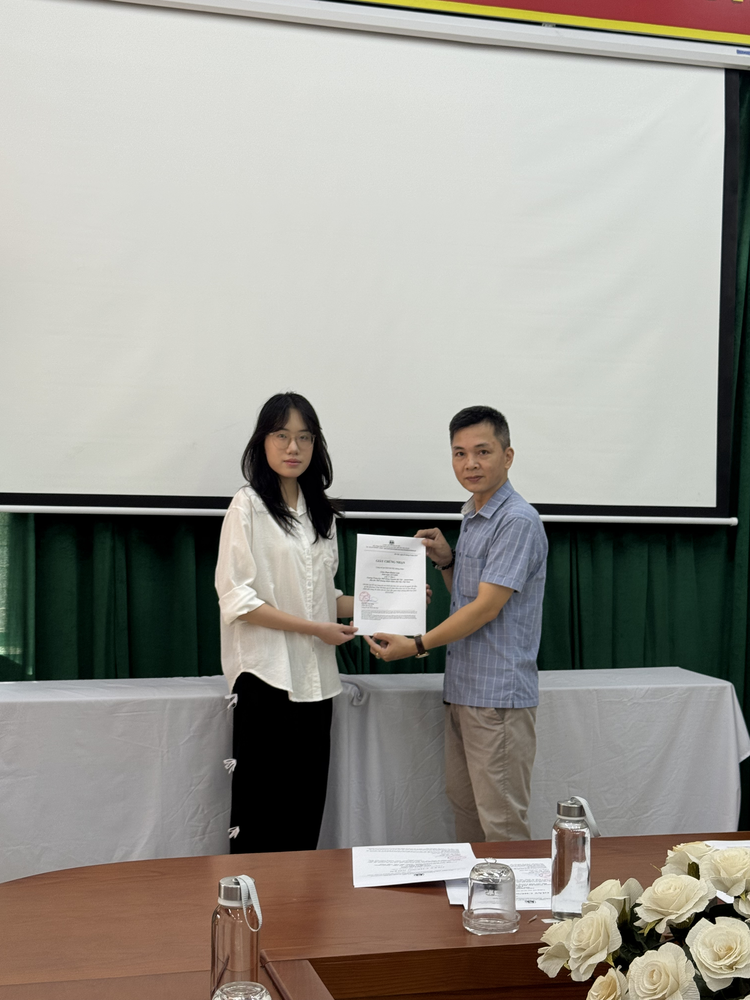
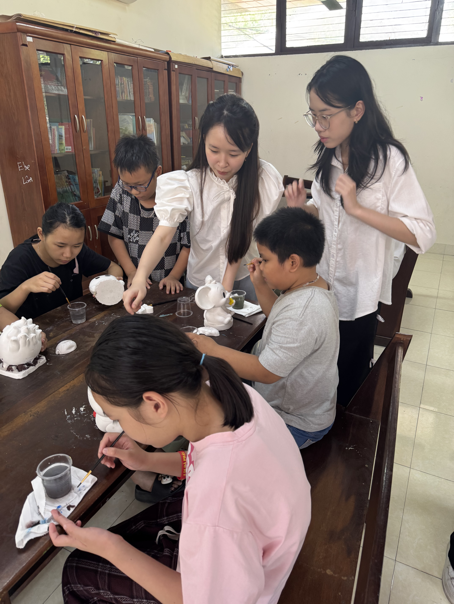
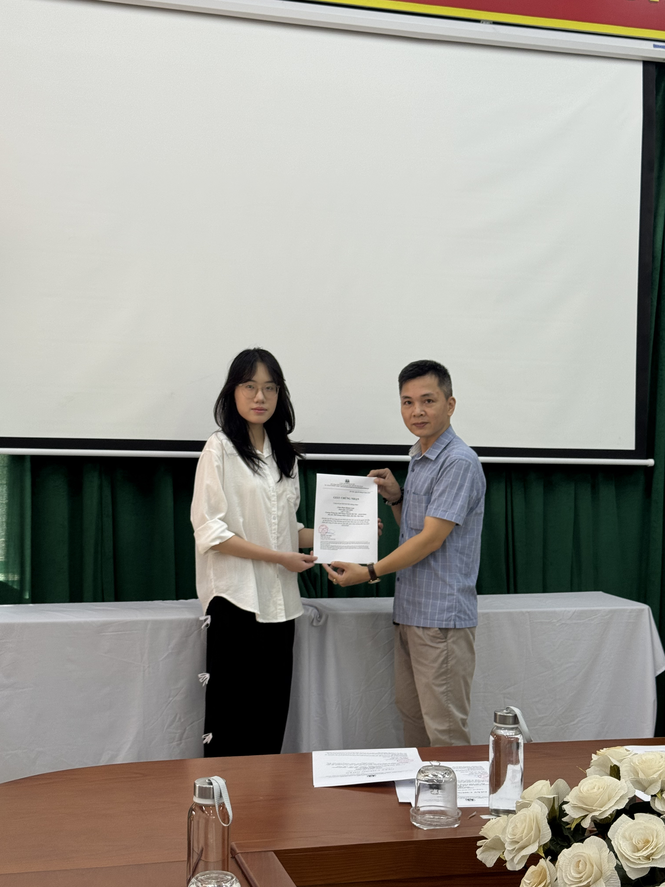

About Me

As a Grade 11 student at Hanoi - Amsterdam High School for the Gifted, I have maintained a strong academic record with a 9.5 GPA. My standardized test achievements include an SAT score of 1550 and an IELTS score of 8.0.
GPA: 9.5SAT: 1550IELTS: 8.0
As an active member of the School Youth Union Executive Committee, I coordinate outreach and events that foster campus spirit and social responsibility. I am also leading the development of a social network platform for people with disabilities, overseeing task assignments and timelines to ensure an inclusive, user-centered design.
Outside of school, I volunteer at Thuy An Rehabilitation Center, where I express my creativity through drawing, which strengthens my observational skills and empathy. Looking ahead, I plan to pursue Psychology, aiming to develop data-driven, humane interventions that support mental well-being in diverse learning communities.
 



 


